一貫したものづくり
精密板金から機械加工、塗装、メッキ、シルク印刷まで協力会社とのネットワークで対応します。
OHKAWA SEISAKUSHO / PRECISION SHEET METAL
大川製作所は、精密板金加工、タレパン加工、曲げ加工、溶接、かしめ加工、スタッド溶接に対応しています。 協力会社とのネットワークにより、機械加工、塗装、メッキ、シルク印刷まで含めた製品づくりを進めます。
STRENGTH
設計段階から打ち合わせを行い、加工が難しい形状やコストが高くなりやすい場合でも、経験をもとに別の加工方法を検討します。 図面がない製品でも、簡単なイメージ図、マンガ絵、現物から図面化し、製品化へつなげます。
試作品から小ロット品、量産品まで。豊富な板金加工設備と金型を活かし、さまざまな形状の加工に対応します。
精密板金から機械加工、塗装、メッキ、シルク印刷まで協力会社とのネットワークで対応します。
加工性やコストを踏まえ、お客様のニーズに合った打開策を検討します。
イメージ図や現物から図面化し、製品として成立する形に落とし込みます。
試作品、小ロット品、量産品まで、数量に合わせてきめ細かく対応します。
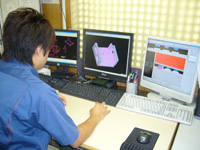
DESIGN TECHNOLOGY
AMADA社製のAP100、AP40、BEND/CAMを使用。DXF、DWG、IGESのデータファイルを読み込み、 データがある場合は正確かつ短時間のプログラミングが可能です。
QUALITY CONTROL
設計段階からお客様の要望を把握し、ブランク加工、曲げ加工、表面処理、最終検査まで工程ごとに品質を確認します。
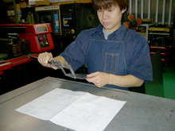
試し取り後、図面と照合して寸法や加工状態を確認します。
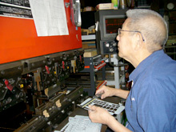
展開寸法、穴位置を確認し、曲げ工程へ進めます。
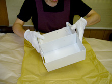
塗装、メッキなど表面処理の検査後、必要書類を添付して納品します。
PRODUCTS
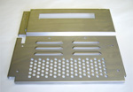
サイズ 250×250。精密板金部品の一例です。
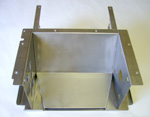
サイズ 250×250×100。筐体・シャーシ製品に対応します。
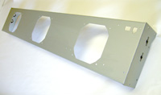
サイズ 1000×160×100。長尺部品の加工例です。
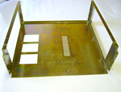
サイズ 420×400×150。制御装置まわりの加工例です。
EFFICIENCY
HDS-8025NT導入後、外段取り化により生産性が30〜40％アップ。 曲げデータをデジタルとして記憶し、必要に応じて呼び出せる体制が、曲げ忘れや寸法違いの削減につながっています。
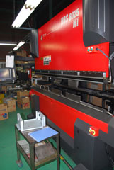
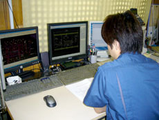
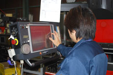
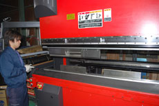
EQUIPMENT
CAD/CAM、NCタレットパンチプレス、NCベンダー、スポット溶接、TIG溶接、かしめ機などを備えています。
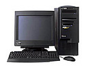
CAD/CAMネットワーク対応型2次元CAD/CAM。
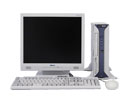
BENDING曲げデータ自動プログラミングシステム。
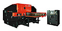
PUNCHNCタレットパンチプレス。4×8材の加工に対応。
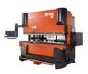
BENDERネットワーク対応型ベンダー。
COMPANY
CONTACT
図面、DXF、DWG、IGESデータ、または簡単なスケッチ・現物情報をもとに加工可否を確認します。